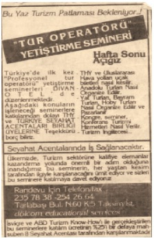
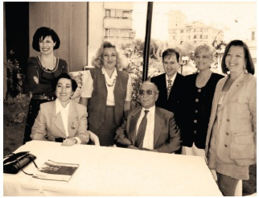
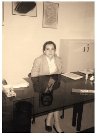
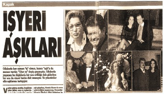

Deulcom
“Önce sat! Sonra harca!”
Baybars Altuntaş
7
400 dolara Deulcom’u kurdum!
Üniversite öğrencisiyim ve part-time çalışıyorum diye beni işten çıkaran Genel Müdürüm Halim Güreş, 5 yıl sonra benim kurduğum Deulcom International’ın Genel Müdürü oldu ve 10 yıl beraber çalıştık. Halim Bey’i tanıştırırken şöyle derdim : ‘’5 yıl önce de Genel Müdürümdü, hâlâ Genel Müdürüm.’’
Taksim’deyim. Otobüsten indim, İstiklal Caddesi’ne doğru yürüyorum. Derneğe bir uğrayayım, bakalım franchising işleri nasıl gidiyor dedim.
Kapıdaki görevli, derneğin artık burada olmadığını, yeni yönetimin işleri yakından takip etmek için dernek merkezini değiştirdiğini söyledi. Benim ofis ise boş, bıraktığım haliyle duruyordu.
Ertesi günü TURYAP’ın Şişli’deki Genel Müdürlük binasına uğradım. Azmi Sarıbay sıfırdan gelmiş ve TURYAP markasını üretmiş ve emlakçılık dünyasına yepyeni bir sistem getirmişti. Ben derneğin genel sekreteriyken o da başkan yardımcısıydı. Aynı zamanda Tarlabaşı Bulvarı’ndaki dernek merkezinin bulunduğu bina da ona aitti.
“Azmi Bey, Tarlabaşı’ndaki derneğin merkezi boşalmış. Ne yapacaksanız orayı?”
“Bilmem!”
“Projem var.”
“Hayırdır?”
“O odayı sınıf yapalım, seyahat acentelerine eleman yetiştirme semineri açalım orada...”
Ben daha önce seyahat acentelerinde çalıştığım için sektördeki yetişmiş eleman boşluğunu biliyordum. Türkiye’de turizm patlaması bekleniyordu, ancak turizmci adına sadece otelci yetiştiriliyordu Türkiye’de 1990’lı yıllarda. Turizm Meslek Liseleri, Turizm Meslek Yüksek Okulları ve Turizm İşletmeciliği Bölümleri sadece otelci yetiştiriyordu. Hâlbuki o sıralarda 3000 civarında seyahat acentesi vardı ve bu acentelerin rezervasyondan tur satışına, rent a car’dan konferans organizatörüne kadar binlerce yetişmiş elemana ihtiyacı vardı.
Azmi Bey dedi ki:
“Baybars, bu iş tutmaz. Türkiye’de kimse seyahat acentesinde çalışmak için gidip de kursa falan yazılıp para vermez.”
Azmi Bey, Tarlabaşı’ndaki binasında emlakçılık kursları açıyordu. Satış tekniklerini zaten oradan kapmıştım bu işin. Bence, eğer insanlar emlakçı olmak için kursa para veriyorsa, seyahat acentesinde çalışmak için de aynı parayı verirdi. Neticede her iki meslek dalı da aslında aynı işti, komisyonculuktu. Ancak, Azmi beyi bir türlü ikna edemiyordum.
Benim hedefim şuydu: İngilizce Öğretmenliği Bölümünü bitirince, gidip de 500 Dolara kariyer hayatına stajyer olarak atılacağıma, Azmi Bey’e açtıracağım bu kursların başında yönetici olarak ve daha yüksek bir maaşla işe başlardım.
Fakat evdeki hesap çarşıya uymadı. Azmi beyi defalarca ziyaret ettim. Nuh dedi, peygamber demedi!
En sonunda patladı:
“Senin ne kadar paran var?”
“400 Dolarım var Azmi Bey, özel derslerden biriktirdiğim para.”
“Bayağı biriktirmişsin” dedi.
“Sen şimdi bu 400 Dolarınla bir reklam ver gazeteye. Şu 400 Dolardan kurtul, ben de senden kurtulayım.”
Hiç beklemediğim bir teklifti bu. Tüm birikimimi riske atmamı istiyordu Azmi Bey. “Biraz düşünmek istiyorum” dedim. İnsan, başkasının parasıyla girişim projesini daha kolay geliştirebiliyor ama kendi parası söz konusu olunca işin rengi değişiyor. İnsan biraz düşünmek istiyor. Bu durumu çok iyi bildiğim için, Dragons’ Den’de karşıma gelen girişimcileri bir de bu gözle değerlendirmeyi hiç ihmal etmedim.
Sonuçta şu karara vardım: “400 Dolarla da yaşasam belediye otobüsüne biniyorum, 400 Dolarım olmasa da belediye otobüsüne bineceğim. Arada ne fark var ki? Parayı kaybedersem biraz daha fazla özel ders verir, tekrar 400 Doları kazanırım.”
“Azmi Bey, kararımı verdim, reklamı verelim” dedim.
“Aman” dedi, “otur şöyle, hemen geç bilgisayarın karşısına, hazırla reklamını. Fikrini değiştirmeden bu iş bitsin. Yalnız, ilanda sakın Seyahat Acentesi Elemanı Yetiştirme Kursu deme. Bizim millet eleman olmak istemez. Tur Operatörlüğü de” dedi.
“Azmi Bey, Profesyonel Tur Operatörlüğü desem nasıl olur?”
“Bak, bu daha güzel oldu.”
Böylelikle 400 Dolara ancak 2 sütun 10 cm. küçücük bir ilan hazırlamak zorunda kalmıştım. Kursun adını da Azmi Beyle ayaküstü bulmuştuk. Yanımda para olmadığı için ‘dostluk başka, ticaret başka’ diyerek 400 Dolarlık bir de senet imzalatmıştı Azmi Bey bana.
9 Şubat 1992, Pazar. Hürriyet gazetesinin seri ilanlar bölümünde Türkiye’nin ilk “Profesyonel Tur Operatörlüğü Semineri” ilanı çıktı. Azmi Bey, Tarlabaşı Bulvarı’ndaki o ofisi ve telefonu kullanabileceğimi söylemişti. Her şey ücretsizdi.
O hafta sonu, Fındıkzade’de anneannemde kalıyordum. İlanın çıktığı gün sabah erkenden kalktım, saat 8’de ofisteydim ve çok heyecanlıydım. Bakalım telefonlar çalacak mıydı? Azmi Bey mi haklı çıkacaktı, yoksa ben mi?

17 Şubat 1992, Pazartesi. İlanı verdikten tam 7 gün sonra. Kırtasiyeden aldığım kasadaki paraları sayıyorum; tam 17.400 Dolar!
Evet, yanlış duymadınız, o hafta 72 kişi gelip kayıt yaptırmıştı. Ertesi hafta bir 17.000 dolar daha. Bir ay içinde bende 100.000 Dolara yakın nakit para birikmişti. Yaptığım hesaplara göre 2 adet ilan (800 Dolar) ve 42 saatlik seminer eğitmen ücreti (840 Dolar) ve Harbiye’deki Divan Oteli’nin (bu kadar kişiyi 20 metrekarelik sınıfa sığdırma imkânım olmadığı için) 3 hafta sonu Cumartesi – Pazar Salon ücreti (3000 Dolar) dışında kalanın tamamı kardı. Yani 1 ayda yaklaşık 95.000 Dolar para kazanmıştım.
Nerede 500 dolar, nerede 95.000 dolar?
Üç Ay Sonra İzmir’de Şube Açtım
Azmi Bey, ara sıra arayıp “İşler nasıl gidiyor?” diyordu.
“Eh, idare ediyoruz” diyordum. Vaziyete uyanıp benden kira falan istemesin diye, pek açık vermek istemiyordum. Konuyu derslere falan getirip, iş konusunu kapatmaya çalışıyordum.
Bir gün yine sekreteri telefondaydı:
“Azmi Bey görüşmek istiyor, Baybars Bey.”
“Buyurun Azmi Bey.”
“Baybars, işler nasıl gidiyor?”
“Eh, idare ediyoruz Azmi Bey. Dersler de çok yoğunlaştı, final sınavları falan...”
“Boş ver şimdi dersleri, işleri soruyorum sana.”
“Eh işte...”
“Yahu nasıl eh işte? Araba almışsın kendine?”
Binadaki ofis boylar Azmi Beye haberi yetiştirmişlerdi.
“Hemen gel, bir şey konuşacağım seninle.”
Ertesi günü elimde kira kontratım, 3 aylık depozitoyu da nakit ödemiş şekilde ayrıldım Azmi Bey’in ofisinden.
* * *
Yaklaşık 3 ay sonra Deulcom’un ilk şubesini İzmir Alsancak’ta açtım. Ardından 3 ay sonra Ankara Meşrutiyet Caddesi’nde ikinci şubeyi açtım. 9 ay sonra, yani 1993 yılına 3 şubem, 4000 mezunum, cebimde de yüklüce bir nakit parayla giriş yaptım.
Tam 1 yıl sonra, Aralık 1993’te sıfır kilometre 94 model BMW 3.16 ve şoförümle beraber Boğaziçi Üniversitesi’ndeki derslerime gidip geliyordum. İşin en unutamadığım kısmı da yurttaki arkadaşların “senin şoför gelmiş, aşağıda” diye dalga geçmeleriydi. Bir müddet sonra Ataköy’de kendi daireme çıktım. Yurt hayatım böylelikle bitmiş oluyordu.
Haydi, Gençler Mahkemeye!
Bir gün Milli Eğitim Bakanlığı’ndan bir müfettiş geldi:
“Nerede kurs izniniz?”
“İzin mi almam gerekiyordu?”
625 sayılı bir kanun varmış, kurs düzenlemek için Milli Eğitim Bakanlığı’ndan izin alınması gerekiyormuş.
“Valla benim böyle bir şeyden haberim yok, olsaydı alırdım.”
Savcılığa verdiler beni, 6 aydan 2 yıla kadar hapis cezası talebiyle. Haydi, buyurun bakalım, aldık mı başımıza belayı?
Bir yandan kurslar devam ediyor, bir yandan da İstanbul’da ayrı, İzmir’de ayrı, Ankara’da ayrı mahkemelere çıkıyorum. Sağ olsun Milli Eğitim Bakanlığı yetkilileri her ilde ayrı ayrı hakkımda suç duyurusunda bulunmuş. Yeni mezun, genç bir avukatım var, onunla mahkemeleri dolaşıp duruyoruz. Standart bir sunum hazırlamışım... Her davada, ne kadar zor şartlar altında yaşadığımı, harçlığımı çıkartmak için bu işleri yapmak zorunda kaldığımı, üniversitede zavallı bir öğrenci olduğumu anlatıp, affederlerse bir daha böyle bir şey yapmayacağıma dair söz veriyordum. Avukatım da “aynen katılıyorum” diyor. Sanki suçlu o, ben avukatım.
Neyse ki mahkemeler bayağı uzun sürüyordu.
Kendi kendime, ben bu mahkemelere ayıracağım vakti şu izinleri almak için ayırsam daha doğru bir strateji olur dedim ve Milli Eğitim Müdürlüklerine birer dilekçe verip resmi prosedürü başlattım. Sonuçta izinleri topladım, mahkemelere verdim ve davalar düştü. Tabii işin ruhsat alma prosedürünü de böylelikle öğrenmiş oldum. Eğer Milli Eğitim Bakanlığı hakkımda suç duyurusunda bulunmasaydı, sanırım Türkiye, benim gibi bir girişimcinin ülkesi için üreteceklerinden mahrum kalacaktı. Kötü komşu insanı ev sahibi yaparmış misali oldu bu işler.
Böylelikle o zamana kadar sadece İngilizce, bilgisayar, biçki dikiş kursları gibi klasik kurslarla uğraşan Milli Eğitim Bakanlığı’nda resmen bir çığır açtım ve Türkiye’nin ilk resmi kariyer sertifika programını Milli Eğitim Bakanlığı’na sundum: Profesyonel Tur Operatörlüğü Kursu.
Talim ve Terbiye Kurulu üyeleri çok şaşırmıştı. Seyahat acentelerine özel bir kurs eleman yetiştirebilir miydi? Madem yetiştirilebilirdi de şimdiye kadar niye kimse bunu akıl edememişti? Bir üniversite öğrencisi bu işi yapabilecek miydi? Kurs programının içeriği yeterli miydi?
Sonuçta program Talim ve Terbiye Kurulu’nca onaylandı. Artık Deulcom’da, Milli Eğitim Bakanlığı’ndan onaylı sertifikalar da vermeye başladım.
Avukatınızı
seçerken dediklerimi
unutmayın.
56.Avukatınızla çalışırken 2 tip çalışma yapabilirsiniz. Aylık düzenli ödemeler yapacağınız sözleşmeli bir avukat veya dava başı anlaşma yapacağınız bir avukat.
57.Aylık ödeme yapacağınız bir sözleşme yapabilirsiniz. Bu durumda, yıllar sonra avukatınız, eğer avukatınızı değiştirmek isterseniz, sizden kıdem tazminatı talep edebilir. Yani sizin yanınızda çalışan bir personel gibi onu işten çıkarmış pozisyonuna düşebilirsiniz. Bunu bilin.
58.Şirketinizin sermayesi 500.000 TL ve üzerinde ise mutlaka bir avukatla sözleşmeli olarak anlaşma yapmak ve sözleşmenin bir nüshasını bağlı olduğunuz ticaret odasına vermekle yükümlüsünüz. Avukata ihtiyacınız olsun veya olmasın, kanunen bu böyle. Eğer şirketinizi yeni kurduysanız, 500.000 TL sermayenin altında bir rakamla şirketinizi kurarak böyle bir ek maliyetten kurtulabilirsiniz.
59.Çok yoğun bir hukuk işleminiz yoksa dava başı bir anlaşma ile avukatınızla çalışmak daha doğru olacaktır.
Fakat bu işlerin sonunda anladım ki Milli Eğitim Bakanlığı’ndan kurs izni almak ve gidip Talim ve Terbiye Kurulu’ndan yepyeni bir program onaylatmak yerine, NASA ile beraber uzaya araç gönderme iznini çok daha kolay alırdım. Deveye hendek atlatmak gerçekten çok daha kolaydı. Ama oldu işte!
Ben bir girişimci olarak bardağın hep dolu kısmına baktım şimdiye kadar. Milli Eğitim Bakanlığı’ndaki bu bürokrasinin bolluğundan, karşıma her gün çıkan başka bir engelden çok mutlu oldum. Neden mi? Şu yüzden: Ben bu işleri yaparken çekindiğim konu şuydu. Bir başka girişimci de uyanır ve karşıma rakip olarak gelir. Tam şirketimi büyütürken hem rakiple uğraşmak zorunda kalırım, hem de kazandığım para azalır. Fakat, Milli Eğitim Bakanlığı’ndaki bu prosedür bolluğu beni rahatlattı. Bu şartlar altında bir rakip çıkma ihtimalinin olmadığını anladım. Bugün belki benim için yorucu olan bu bürokrasinin, yarınlarımın sigortası olduğuna kanaat getirdim.
Nitekim aradan 20 yıl geçti ve aynen düşündüğüm gibi oldu. Bir tek rakip çıkamadı karşıma.
Sırada Hosteslik Kursu Var
Türkiye’de özel havayolları yeni yeni kuruluyordu. Bu havayollarına hostes gerekiyordu. Türk Hava Yolları’nın dışında da hostes yetiştiren bir birim yoktu Türkiye’de.
“Bu da benim acilen ilgilenmem gereken bir konu” diye düşündüm. Nasılsa Milli Eğitim Bakanlığı ve Talim ve Terbiye Kurulu kısımlarındaki prosedürü öğrenmiştim. Gerçi gözüm yemiyordu tekrar aynı kulvara girmeyi ama Türkiye’de üniversiteyi kazanamamış gençlerin hostes olmak için de Deulcom’da kuyruğa gireceklerini düşünüyordum.
Nitekim tahmin ettiğim gibi oldu. İstanbul, Ankara ve İzmir’de bir yıl içinde 3000 hostes adayını mezun etmiştik.
Türkiye’nin Milli Eğitim Bakanlığı’nca onaylı ilk Hosteslik Kurslarını da 1994 yılında ben açmış oldum böylece, henüz 24 yaşında.
* * *
Bu arada dersleri idare etmeye çalışıyordum. Dönem donduruyorum, dersleri bilerek başka dönemlere bırakıyorum, askerlik sorunuyla uğraşmak istemiyordum. Tek başımaydım, yüzlerce insan yanımda çalışıyordu ve işlere destek olacak hiç kimsem yoktu yanımda. Askere gitmek, tam bir felaket olurdu benim için.
Hani Beni İşten Kovan O Genel Müdür Vardı Ya!
Bu arada işler hızla ilerliyordu. Bir gün telefonum çaldı.
“Ben Halim Güreş. Bilmem beni hatırlar mısınız, Baybars Bey?”
1988 yılında çalıştığım Köytur Seyahat Acentesi’ni Çelebi Turizm satın almış, Şişli’ye taşımıştı. Çelebi’nin Genel Müdürü Halim Güreş beni odasına çağırıp, part-time öğrencilerle çalışma sistemlerinin olmadığını söyleyip beni işten çıkarmıştı.
Şimdi aradan 5 yıl geçmiş ve Halim Bey telefondaydı.
“Buyurun Halim Bey, tabii hatırlarım. Hayırdır?”
“Çelebi Turizm’den ayrıldım. Sen de Deulcom’u kurmuşsun. Acentelerin Ticketing personeline müthiş ihtiyacı var. Göreve hazırım.”
Halim Bey, böylelikle Deulcom’un Genel Müdür’ü oldu. O sıralarda Halim Bey’i tanıştırırken şunu söylüyordum.
“Halim Bey, 5 yıl önce de Genel Müdürümdü. Şimdi de Genel Müdürüm!”
* * *

Halim bey kendi yaş grubundan bir ekip kurunca
Deulcom’un en genç üyesi böylelikle ben olmuş oldum.
Henüz 24 yaşındayım, Boğaziçi Üniversitesi’nde öğrenciyim, medya beni çok sevdi, sürekli gazetelerdeyim; lüks otomobilim, şoförüm ve 3 şehirde şubelerim...
Hostes adaylarının anneleri, nedense, kızlarını almaya gelmişken mutlaka bana uğrayıp kızlarının ders durumlarını yakından öğrenmek istiyorlardı... Ben de hiç sıkılmadan kızlarının nasıl daha başarılı olabileceklerini anlatıyordum kendilerine... Güzel günlerdi.
Rakibe’nle Evlenmenin Faydaları!
Ben sigara içmediğim için personelin de sigara içmesine karşıydım. Toplantı yaptık, tüm personeli topladım. Yaklaşık 10 kişiydik toplantıda. Halim Güreş dedi ki:
“Artık ofiste sigara içmiyoruz.”
Bu zor bir konuydu, çünkü tüm satışları yapan satış müdürümüzdü şirkette sadece sigara içen. Azmi Bey’in eski personeliydi ve oradan transfer etmiştim kendisini. Tüm kursiyerleri çok iyi ikna ediyor, her biriyle teker teker ilgileniyor, süper satış sonuçları çıkıyordu her ay.
“Ben işi hemen bırakırım” dedi.
Her girişimcinin prensipleri oluşuyor zaman içinde. İnsan kendi kendisini de tanıyor zaman geçtikçe. Anladım ki, ben personelden gelen kuru gürültüye pek pabuç bırakacak cinsten değilim. Daha doğrusu değilmişim.
“Hemen bırakın, toparlanın” dedim.
Sandı ki alttan alacağız. Yanıldı. Geri adım da atamadı. İçeri gitti, çantasını aldı ve çıktı.
Kendi kendime “Ben ne halt ettim şimdi?” dedim.
Sezon başlamış, günde 30 kişi gelip kurslar hakkında bilgi istiyor, daha önce yapılmış satışlar var, hiçbiri hakkında bilgim yok. Ve satış müdürü olmadık bir sebepten işi bırakmış.

Benim vücudum bu tip durumlarda değişik bir hormon salgılıyor anladığım kadarıyla. “Bu arkadaş bugün kalp krizi geçirip ortadan yok olsaydı ne olacaktı?” dedim kendi kendime. Ve paşa paşa ertesi sabah satış ofisine ben geçtim. Sabahtan akşama kadar kurs satışı yapıyorum.

Satışa geçtiğim gün öğleden sonra 2 arkadaş geldi karşıma. Hosteslik kursları hakkında bilgi istiyorlar. Anlattım. Biri dedi ki:
“Arabanız var mı?”
“Var, hayırdır?”
“Biz aynı zamanda bir sigorta şirketinde çalışıyoruz. Biz de size kasko poliçesi hakkında biraz bilgi verelim.”
Ben onlara kurs satmaya çalışırken, onlar bana kasko satmaya başladılar. Dinlerken anladım ki, iyi satıcı.
Ertesi günü aradım.
“Kurslar hakkında karar verdiniz mi?”
“Henüz vermedik.”
“Sigortacılık yerine, eğitim satışı ile uğraşmak ister misiniz?”
Pazartesi günü satış müdürü olarak işe başladı ve o hafta çok iyi satışlar yaptı. Çok çabuk öğrenen oldukça zeki biriydi. Üzerimden öyle büyük bir yük kalktı ki anlatamam. 3 ay sonra evlendik...
Şimdi Alara ile Eda’nın sevgili anneleri, Deulcom’un Genel Müdürü. Bütün işleri tek başına yürütüyor. Bana bu kitabı yazacak vakit kaldı, onun sayesinde. Hayatımda verdiğim en doğru karar oldu Rakibe!
“Eğer o toplantıda sigara mevzuu olmasaydı” diye ara sıra düşünürüm kendi kendime...
IATA Onaylı Öğretim Üyesi Aranıyor!
Halim Güreş, İsviçre’ye gitti ve IATA – Uluslararası Havayolları Birliği – ile temasa geçti. IATA’nın dünyada onaylı ilk eğitim merkezlerinden biri olduk. Artık verdiğimiz sertifikalar dünya çapında geçerliydi; Türkiye hariç.